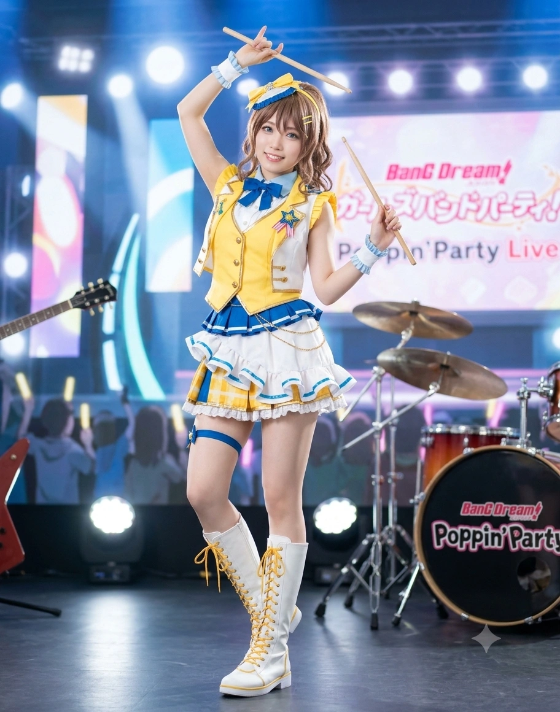

1. 개요
"어서 오세요, 갓 구운 초코 소라빵이 방금 나왔답니다~ ......어느 쪽이냐고 하면, 역시 빵이려나? 후훗♪"
"잠깐만요, 거기 빨간 조끼 입은 '이사야' 씨? 어디서 그 더러운 입으로 신성한 '사야(沙綾)'라는 이름을 팔아먹어요? 내 반죽 밀방망이로 '뚝스딱스' 맞고 사능동 앞바다에 가라앉고 싶어요?!"
효빈광역시 북구 사능동(沙綾洞)의 명물이자 전국 오타쿠들의 빵지순례 성지 제1호인 『산취제과(山吹製菓, 통칭 야마부키 베이커리 사능본점)』의 장녀이자 현재 가게의 실질적인 운영과 제빵을 도맡아 하고 있는 총괄 수석 파티시에. 동시에 스튜디오 효빈 대표 강숙미가 이끄는 밴드 『포핀☆스타』의 든든한 드러머이자 정신적 지주(마망)다.
이름의 한자부터가 양사야(梁沙綾)로, 자신이 태어나고 자란 고향 사능동(沙綾洞) 및 《BanG Dream!》 Poppin'Party의 드러머 야마부키 사아야(山吹 沙綾)의 이름 한자 '모래 사(沙), 비단 능/아야(綾)'와 100% 완벽하게 일치한다![5]심지어 아버지가 운영하는 빵집 이름인 『산취제과(山吹製菓)』의 '산취(山吹)'를 일본어로 읽으면 정확히 '야마부키'가 된다! 원래는 '양씨네 황매화(산취화) 빵집'이었는데 오타쿠 성지가 되면서 한자 간판을 전면에 내걸었다. 게다가 출생 연도는 사아야의 담당 성우인 오오하시 아야카(1994년생)와 똑같고, 생일(9월 15일)은 사아야의 생일(5월 19일) 숫자를 정확히 뒤집어 놓은 날짜다.
파마가 들어간 포근한 연갈색 사이드 포니테일(기분에 따라 헤어 슈슈와 클립을 매일 바꾼다), 맑고 처진 파란 눈매, 157cm의 키에 제빵 반죽으로 단련된 탄탄한 팔근육과 B87(E컵)의 글래머러스한 베이글 체형, 그리고 성우와 똑같은 왼손잡이 속성까지 야마부키 사아야가 현세에 그대로 강림한 인물이다. 자타공인 '사아야 오시'인 박효빈 효빈광역시장이 사능동에 올 때마다 두 손 모으고 영접하는 '사능동 빵집거리의 살아있는 여신'으로 추앙받고 있다.
2. 생애 및 학창 시절
2.1. 사능(沙綾)동 『산취제과』의 효녀 장녀와 중학교 밴드의 아픔
1994년 9월 15일(효빈직할시가 효빈광역시로 개칭되기 불과 몇 달 전), 북구 사능동2가의 오래된 동네 빵집 장녀로 태어났다. 당시는 1969년 사능선 전차 강제 폐지로 인한 '2시간 출국 지옥'이 1994년 3호선 사능역(노란색 노선!) 개통으로 막 해결되던 역사적인 해였다. 아버지 양정수 명장은 3호선 개통과 딸의 탄생을 동시에 기념하며 가게 이름을 3호선의 상징 꽃인 황매화(山吹)를 따서 『산취제과(山吹製菓)』로 지었다.
어릴 적부터 몸이 다소 약했던 어머니 최수연 여사에게 부담을 드리지 않기 위해, 사야는 효빈사능초등학교와 사능중학교에 다니는 내내 새벽 5시에 일어나 아버지의 빵 반죽을 돕고, 무려 10살·12살이나 터울이 지는 늦둥이 동생들인 양준(2004년생)과 양사나(2006년생)의 기저귀를 갈고 우유를 먹여 키운 지극한 효녀이자 K-장녀였다. 항상 남을 먼저 배려하고 '착하고 의젓한 언니'를 연기하는 버릇도 이때 형성되었다.
중학교 시절 친구들과 첫 걸즈 밴드(CHiSPA 포지션)를 결성해 드럼을 쳤으나, 첫 정기 공연 당일 아침 어머니가 과로와 현기증으로 쓰러져 사능동1가 효빈대병원 응급실로 실려 가는 일이 벌어졌다. 친구들의 배려로 병원으로 달려간 사야는 '내가 밴드 연습에 시간을 쓰면 가족들에게도, 밴드 동료들에게도 민폐만 된다'는 깊은 죄책감과 트라우마에 빠져 스스로 드럼 스틱을 꺾고 마음의 문을 닫아버렸다. 효빈예술고등학교 실용음악과(타악기 전공)에 진학한 뒤에도 방과 후에는 합주 대신 곧장 집으로 달려가 빵집 카운터를 지키는 나날을 보냈다.
2.2. 4살 언니 강숙미와의 운명적 만남과 효빈대 제과제빵학과 진학
그렇게 스스로의 본심을 억누르며 살아가던 사야의 인생에 벼락처럼 뛰어든 존재가 바로, 효빈예고와 효빈대 선배이자 자신보다 무려 4살이나 많은 언니(1990년생)였던 강숙미(토야마 카스미 본체)였다!
사야가 고등학교 3학년(2012년)이던 시절, 막 효빈대를 졸업하고 스튜디오 효빈에 갓 입사했던 23살의 강숙미가 사능동 산취제과에 빵을 사러 왔다가 가게 구석에 놓인 사야의 낡은 드럼 패드를 발견한 것이다. 숙미는 4살 어린 고등학생 사야에게 "우와아~! 너 드럼 치는구나?! 사~야(さーや), 나랑 같이 반짝반짝 두근두근한 밴드 하자!!"라며 다짜고짜 들이댔다.
사야는 처음에 "전 빵집 일도 도와야 하고 어머니 몸도 약하셔서 안 돼요..."라며 거절했으나, 강숙미는 매일같이 동갑 친구인 이아리, 우서림을 끌고 산취제과로 출근 도장을 찍더니 아예 앞치마를 두르고 빵 포장과 배달을 대신 도와주기 시작했다! 그리고 어머니가 다시 현기증으로 병원에 가셨던 날, 숙미가 사야를 위해 직접 작사해 보낸 『STAR BEAT! ~별의 고동~』 데모 음원과 음성 메시지를 들은 사야는 참았던 눈물을 터뜨리며 트라우마를 완전히 극복했다.
"사야야, 네 다정함을 남한테만 쓰지 말고 너 자신에게도 좀 써. 가고 싶지? 그 아이들(숙미네 밴드)에게로!" — 어머니 최수연 여사의 격려
결국 사야는 4살 많은 언니들(강숙미, 이아리, 우서림)의 밴드에 막내 드러머로 합류했다. 재미있는 점은 강숙미가 워낙 정신 연령이 해맑고 덜렁거리는 탓에, 합류 일주일 만에 4살 어린 양사야가 오히려 언니들의 도시락을 챙기고 사고를 수습하며 반말과 존댓말을 섞어 쓰는 '실질적 맏언니(마망) 겸 친구' 포지션으로 서열이 역전되었다는 것이다.[6]강숙미, 이아리, 우서림(90년생)보다 사야(94년생)가 4살 어리고, 천모카(92년생)가 2살 어리며, 오다혜(97년생)가 7살 어리지만, 숙미 특유의 평등한 인싸주의 덕분에 전원이 나이를 잊고 '사~야', '숙미', '모카 쨩', '오타에'라 부르며 동급생 친구처럼 지낸다.
이후 대입에서는 드럼을 취미이자 밴드 활동으로 남기고 가업인 빵집을 세계 최고로 키우기 위해 효빈대학교 생활과학대학 제과제빵학과(13학번)에 지원했다. 전교 수석이던 강숙미나 이아리처럼 천재형 우등생은 아니었지만, 새벽 빵집 일을 하면서도 학교 수업을 단 한 시간도 빼먹지 않고 묵묵히 필기한 성실함 덕분에 내신과 수능 모두 준수한 중상위권 성적을 거두어 무난히 현역 합격했다.
2.3. 야마부키 베이커리 로드의 여신 등극
효빈대 제과제빵학과 졸업 후 일본 도쿄의 유명 제과학교로 6개월간 단기 유학을 다녀온 사야는, 본가 『산취제과』의 총괄 수석 파티시에로 취임해 '특제 벨기에산 생초코 소라빵(초코 코로네)', '사능 벚꽃 팥빵', '햇양배추 페페론치노 조리빵' 등 애니메이션 속 야마부키 베이커리의 메뉴들을 현실에서 200% 이상의 맛으로 재현해 냈다.
여기에 사능동(沙綾洞)과 사야 본인의 이름이 야마부키 사아야와 한자까지 똑같다는 사실이 입소문을 타면서, 사능역 6번 출구에서 HSCO로 이어지는 600m 거리는 '야마부키 베이커리 로드'라는 전국구 성지로 대폭발했다. 현재 산취제과는 하루 평균 초코 소라빵만 3,000개 이상 팔려나가는 효빈시 최고의 핫플레이스로 군림하고 있다.
2.4. 새벽 6시의 단골손님과의 운명적 로맨스와 '워킹맘' 등극
사야가 스물여섯이던 2020년, 산취제과에는 매일 새벽 6시 오픈 시간에 맞춰 가장 먼저 찾아와 화려한 캐릭터 빵 대신 소박한 식빵과 모닝롤만 사 가는 단골손님이 있었다. 그는 바로 모교인 사능중학교에 새로 부임했던 사회교사 박효인(1992년생)이었다.
그는 오타쿠 성지순례객들이 몰려들기 전의 고요한 새벽마다, 체구가 작은 사야가 20kg짜리 밀가루 포대와 우유 박스를 옮길 때면 말없이 나타나 번쩍 들어다 주고는 미소와 함께 빵을 사서 출근하곤 했다. 애니메이션이나 성우, 밴드 밈에 대해서는 전혀 몰랐지만, 그저 묵묵히 빵을 굽고 가족과 주변 사람들을 살뜰히 챙기는 사야의 헌신적이고 다정한 본모습에 깊이 반했던 것이다.
그러던 어느 여름 비 오는 날, 빵집 앞 어닝을 펴다 빗물에 흠뻑 젖은 사야에게 그가 자신의 겉옷을 덮어주며 조심스럽게 고백을 건넸다. 마침 빵을 훔쳐(?) 먹으러 왔다가 가게 창문 너머로 이 장면을 직관하던 강숙미와 이아리가 팝콘을 씹으며 "꺄아아악!! 우리 사야 청춘이다!!"라고 환호성을 지르는 바람에 분위기가 와장창 깨지긴 했지만, 두 사람의 로맨스는 그렇게 시작되었다. 연애 끝에 효인은 자신이 직접 (살짝 태운) 크루아상을 구워 그 속에 다이아몬드 반지를 숨겨 프로포즈했고, 사야는 감동의 눈물을 흘리며 2020년 가을 성대한 결혼식을 올렸다. 이듬해인 2021년, 엄마를 쏙 빼닮은 천사 같은 딸 연주를 출산하며 사야는 명실상부한 '진짜 마망(엄마)'이자 강인한 워킹맘 파티시에로 거듭났다.
3. 성우 오오하시 아야카(핫시)와의 도플갱어 인연
강숙미 대표에게 성우 아이미가 있다면, 양사야에게는 자신과 똑같은 1994년 9월생 동갑내기이자 왼손잡이 드러머인 성우 오오하시 아야카(통칭 핫시/헤고칭)와의 전설적인 우정이 존재한다.
3.1. 내한 팬미팅 때마다 벌어지는 '현실판 사아야' 재회 대소동
양사야는 자신이 모델 그 자체인 야마부키 사아야의 성우 오오하시 아야카가 한국에 내한할 때마다, 또 한 명의 광팬인 박효빈 효빈광역시장과 나란히 스케줄을 비우고 서울과 효빈의 모든 팬미팅·라이브 현장에 개근 도장을 찍는 성덕이다.
첫 만남은 2023년 4월 15일 홍대 애니메이트에서 열린 오오하시 아야카의 반려묘 '후타소 & 미-라' 인형 전달회였다. 당시 양사야는 자신이 직접 구운 '고양이 모양 수제 쿠키 세트(선물 반입 규정에 맞춘 공식 전달품)'와 함께 사아야 특유의 노란색 슈슈로 사이드 포니테일을 묶고 등장했는데, 사야를 본 오오하시 아야카가 그 자리에서 눈이 동그래져 한국어로 소리를 질렀다!
오오하시 아야카: "에에엣―?! 잠깐만요!! 야마부키 사아야 쨩이 왜 한국 현실 세계에 서 있는 거죠?! 게다가 빵 집게 잡는 손도 나랑 똑같은 왼손잡이에 1994년 9월생 동갑이라구요?! 대박!!"
양사야: "핫시 님~!! 저 효빈시 사능동(沙綾洞)에서 진짜로 야마부키 베이커리(산취제과) 운영하고 있는 양사야라고 해요! 이따가 끝나고 삼겹살에 참이슬 어떠세요?!"
이후 2023년 5월 웨스트 브릿지 첫 팬미팅, 12월 AGF 토크쇼, 2024년 4월·6월 단독 콘서트, 2025년 HAF, 그리고 2026년 8월 8일 경희대 평화의전당 『KIMCHIKURA Fes '26』에 이르기까지, 핫시가 무대 위에서 객석 맨 앞줄에 앉아 있는 양사야(와 그 옆에서 노란 핫피를 입고 펜라이트를 흔드는 박효빈 시장)를 발견할 때마다 "아! 오늘도 한국의 진짜 사아야 쨩이랑 빵 시장님이 와주셨네요~!"라고 마이크로 공개 샤라웃을 날려 객석의 오타쿠 수천 명을 뒤집어 놓는 것이 공식 클리셰로 자리 잡았다.
3.2. 2025년 HAF '야마부키 사아야 대첩' 합동 참교육과 밤샘 소주 회동
2025년 효빈시 사능동 HSCO에서 열린 HAF 기간 중, 혐오 빌런 윤재훈 일당이 오오하시 아야카의 무대에 난입해 욕설을 퍼붓고 3호선 사능역 생일 광고판에 락카 테러를 시도했던 『야마부키 사아야 대첩』 당시, 현장의 최전선에서 주민들을 지휘한 것이 바로 상인회 청년회장 양사야였다.
윤재훈이 "사능은 네 개의 무덤(四陵)이다!"라고 무식한 망언을 지껄이자, 양사야는 산취제과에서 길이 1m짜리 대형 프랑스 바게트와 밀방망이를 들고나와 사능시장 할머니들의 '대파·빗자루 방진 대형' 선두에 섰다. 그리고 현장을 지나던 오오하시 아야카가 유창한 한국어로 "당신들, 일본에서도 매장당하고 싶나요? 여기서도 더 매장당하고 싶으세요?"라며 서늘한 일갈을 날릴 때, 그 옆에서 양사야가 똑같은 포니테일 머리를 휘날리며 "들었지 윤재훈?! 우리 사능동에서 한 번만 더 얼씬거리면 네가 좋아하는 감방 콩밥 대신 상한 이스트를 먹여줄 줄 알아!!"라고 합동 포효를 작렬해 윤재훈을 바지에 지리게 만들었다.
사태가 진압된 그날 밤, 오오하시 아야카는 소원대로 양사야의 『산취제과』 2층 테라스에 초대되어 강숙미, 오이슬 등과 함께 사능시장 삼겹살에 참이슬·복분자주·막걸리를 종류별로 궤짝째 마시는 '현실 사아야와의 밤샘 술파티'를 벌이며 영혼의 주당 친구가 되었다.[7]오오하시 아야카가 인터뷰에서 "야마부키 사아야와 밤새 술을 마셔보고 싶다"고 했던 소원이 한국의 도플갱어 양사야를 통해 완벽하게 성취된 순간이었다.
4. 정치 성향: 사능동 철도 수호대와 반(反)국힘 투사
4.1. 전차 알맹이를 뺏어간 보수 정당을 향한 사능동 토박이의 분노
양사야는 밴드 언니들(강숙미, 이아리 등)이 무소속 지지자인 것과 달리, 아예 정식으로 당비를 납부하는 더불어민주당 권리당원이다. 온화하고 상냥한 그녀가 이토록 선명한 민주당 당원이 된 배경에는 고향 사능동의 피눈물 나는 철도 수난사가 자리 잡고 있다.
사야의 조부모님과 아버지 양정수 명장은 1969년 군사정권(현 보수 정당의 뿌리)이 인구 5만 8천 명이 타던 사능동 중심부 전차(사능선)를 단지 '지선'이라는 탁상행정 논리로 강제 폐지해 버려 동네가 '시내 나가는 데 2시간 걸리는 교통의 무덤'으로 전락했던 암흑기를 온몸으로 겪었다. 게다가 사야가 중학생이던 2006년에는 한나라당(국민의힘 전신) 소속 윤대환 시장이 자기네 두청운수 버스 배를 불리겠다며 외곽에 남은 마지막 전차(현 7호선)마저 폐지하려 들자, 어린 사야도 할머니들의 '빗자루 소금 항쟁' 대열에 따라 나가 소금을 뿌렸던 생생한 기억을 가지고 있다.
결정적으로 제22대 총선 당시 국민의힘 오한길 후보가 산취제과 바로 앞 유세차에서 "언제적 전차 타령입니까!"라는 망언을 내뱉고 애니메이션 성지 문화를 비하하자, 사야는 상인회 마이크를 잡고 "우리 동네 전차 뺏어가서 상권 죽여놓은 정당은 사능동 땅에 발도 붙이지 마세요! 사능선 트램 복원해 주시는 박효빈 시장님과 원성준 의원님이 계신 민주당만이 사능동의 가족입니다!"라고 연설해 사능2동 민주당 득표율 87.80% 신화를 견인했다.
4.2. 전북대 중퇴 극우 청년 '이사야'를 향한 극도의 혐오와 밀방망이 처형
보수 정당 정치인들 중에서도 양사야가 인간 이하의 벌레 취급하며 이름만 들어도 구역질을 하는 불구대천의 원수가 있으니, 바로 타 지역 국립대(전북대학교) 중퇴 출신으로 효빈시 윤재훈·이차야 일당에 빌붙어 반(反)서브컬처·극우 혐오 시위를 벌이고 다니는 청년 '이사야'다!
"내 이름 '사야(沙綾)'는 모래 비단처럼 곱고 따스하게 사람들을 감싸 안으라고 할아버지가 지어주신 이름이고, 바다 건너 사아야(沙綾) 쨩 역시 가족과 친구를 위해 헌신하는 가장 아름다운 이름이에요. 그런데 어디서 대학교도 똑바로 못 마치고 쫓겨난 극우 쓰레기 놈이 '이사야'라는 똑같은 글자를 달고 사능동과 효빈대 앞을 돌아다니며 오타쿠들을 모욕하고 성희롱 시위를 벌여요?! 저 인간이 숨 쉴 때마다 내 이름까지 더럽혀지는 것 같아서 참을 수가 없어요!!" — 양사야, 극대노 인터뷰 中
실제로 이사야가 사능역 앞에서 빨간 조끼를 입고 "나 애국청년 이사야가 사능동 왜색 빵집을 규탄한다!"라며 어그로를 끌 때마다, 평소의 천사표 마망 미소가 완전히 사라진 양사야가 왼손에는 떡갈나무 밀방망이, 오른손에는 Pearl 드럼 스틱을 쥐고 뛰쳐나와 이사야의 확성기와 피켓을 합법적 물리력(?)으로 산산조각 내버린다. 사능동 주민들 역시 "감히 우리 동네 보물 사야 처자랑 이름이 같은 주제를 모르고 깝친다"며 대파로 이사야를 합동 타격하기 때문에, 현재 이사야에게 사능동 반경 1km는 들어가면 뼈도 못 추리는 절대 사지(死地)가 되었다.
4.3. 소속 정당
| 기간 | 정당명 | 비고 |
| 2014~현재 | 더불어민주당 | 사능동 상인회 청년위원회 수석부위원장 |
5. 친구 및 선후배 관계 (효빈시 포피파 & 앱글 실사판 유니버스)
실제 나이는 1994년생으로 언니들(90년생 강숙미·이아리·우서림, 92년생 천모카)보다 동생이지만, 워낙 어른스럽고 포용력이 넓어 크루 내에서는 '모두를 품어주는 절대 마망(엄마) 겸 실세'로 대우받는다.
5.1. 핵심 크루 상세 관계
- 강숙미 (姜淑美 / 토야마 카스미 포지션, 1990년생) - 내 마음의 문을 열어준 4살 위의 '큰애기(?)' 구원자:
스튜디오 효빈의 제3대 대표이사이자 밴드의 보컬. 나이로는 숙미가 4살이나 언니이고 학교 선배이지만, 중학교 밴드 트라우마로 갇혀 있던 사야를 조건 없는 다정함과 '키라키라 도키도키' 에너지로 구원해 준 영혼의 단짝(사야카스 실사판)이다.
트라우마를 극복한 이후의 사야는 원작 애니 3기의 사아야처럼 숙미에게 찰싹 달라붙어 아이처럼 장난을 치거나 어리광을 부리기도 하며, 반대로 숙미가 회사 일이나 덜렁이 기질로 사고를 치면 4살 어린 동생임에도 "숙미(카스미)~! 또 밥 안 먹고 감자튀김만 먹었지? 이리 와서 앉아봐!"라며 엄마처럼 잔소리를 퍼붓고 도시락을 챙겨준다. 최근에는 숙미의 반짝이는 순간을 남기겠다며 DSLR 카메라로 숙미를 24시간 밀착 촬영(거의 도촬 수준)하는 취미가 생겼다.
- 천모카 (千모카 / 아오바 모카 포지션, 1992년생) - 빵으로 대동단결한 영혼의 단골손님 겸 사진 스승:
라이브 하우스 『RiNG 효빈점』의 운영 매니저. 사야(94년생)보다 2살 언니이지만 역시나 나이를超越한 친구 사이다. 산취제과의 오픈 시간(새벽 6시)에 맞춰 좀비처럼 걸어와 갓 나온 빵을 쓸어 담는 단골손님 제1호이며, 모카가 빵 냄새만 맡고도 오늘 오븐 온도가 몇 도인지 맞히는 '블라인드 빵 감별 쇼'를 보여줄 때마다 사야는 깔깔대며 즐거워한다.
특히 사야가 '카메라 사진 촬영'이라는 새로운 취미(캐릭터성)를 갖게 만들어준 결정적인 인물이 바로 천모카이며, 사야 역시 평소에는 나른하고 장난기 많아 보이지만 속으로는 친구들을 깊이 생각하는 모카의 진지한 내면을 누구보다 잘 알아주고 응원해 주는 깊은 우정을 자랑한다. (단, 만우절에 사야가 "오늘부터 산취 주먹밥 가게로 업종 변경합니다~"라고 농담을 쳤다가 모카가 진짜로 세상이 무너진 표정으로 울먹여서 달래느라 혼났다.)
- 우서림 (牛瑞琳 / 우시고메 리미 포지션, 1990년생) - 특대형 초코 소라빵으로 사육(?)하는 귀여운 리듬대 파트너:
스튜디오 효빈 사운드 실장이자 베이스 담당. 숙미와 마찬가지로 사야보다 4살 언니이지만, 체구도 150cm로 작고 성격이 소심해 사야가 "서림링(리미링)~!"이라 부르며 우쭈쭈 챙겨주는 공식 힐링 커플링(사야리미)이다. 서림이가 스튜디오 마감에 쫓겨 창백해져 있으면 사야가 직접 초콜릿 크림을 2배로 채운 '특대형 초코 소라빵'과 미스터리 호러 소설 신간을 들고 찾아가 당 충전과 멘탈 케어를 동시에 해준다.
- 이아리 (李有咲 / 이치가야 아리사 포지션, 1990년생) - 사능중 선배이자 외사촌 언니인 '현직 검사님' 놀려먹기:
사능동 전당포 『유성당』의 장녀이자 현직 효빈광역공소청 검사(공소관) 겸 키보디스트. 어머니 쪽으로 사야와 외사촌 자매뻘이며 유성당 옆 산취제과 2호점 일까지 도맡아 하는 든든한 언니다. 폭주 기관차 강숙미와 4차원 오다혜 사이에서 고통받는 유이한 '상식인 라인'이다. 아리가 뒤에서 몰래 멤버들을 위해 연습실을 치워놓거나 일정을 정리해 놓으면 사야가 가장 먼저 눈치채고 "역시 아리네, 고마워 후훗"이라고 챙겨주며, 아리네 정원 비파나무에서 딴 비파 열매로 수제 잼을 만들어 보답한다. 다만 아리가 숙미 앞에서 츤데레 짓을 할 때마다 사야가 옆에서 생글생글 웃으며 "어머~ 아리도 참, 부끄러워하는 모습도 사랑스럽네~ 사진 찍어야지 찰칵!"이라며 가장 매운맛으로 놀려먹기 때문에 아리는 사야 앞에서도 꼼짝을 못 한다.
- 오다혜 (吳多惠 / 하나조노 타에 '오타에' 포지션, 1997년생) - 엉뚱함을 미소로 받아주는 '손을 잡으면 마음이 통하는' 동생:
미술치료사 겸 코스플레이어로 사야보다 3살 어린 동생. 다혜가 앞뒤 다 자르고 "사야 언니, 지금 빵 반죽에서 토끼 소리가 나. 햄버그 소라빵 만들어줘" 같은 기상천외한 4차원 발언을 던져도, 칼같이 태클을 거는 이아리와 달리 사야는 "아하하, 오타에는 여전히 마이페이스네~ 다음엔 토끼 모양 햄버그 빵 구워줄게!"라며 긍정적으로 다 받아준다. 다혜가 다른 세션 일로 바빠 합주에 못 올 때 누구보다 걱정하며 "손을 잡으면 서로의 마음을 알 수 있어"라며 다혜를 다독여준 훈훈한 언니다.
5.2. 양사야와 친구들의 주요 일화 (전설의 5대 사건)
- 일화 1: 박효빈 시장의 '도쿄 이케부쿠로 인형 빵 피딩' 사진 유출과 산취제과 명예의 전당 박제 사건
2025년 HAF 기간 중 혐오 세력의 난동으로 행사가 취소될 위기에 처했을 때, 박효빈 효빈광역시장이 시청 브리핑룸 대형 스크린에 자신의 국가 기밀급 흑역사 사진(2023년 도쿄 출장 당시 이케부쿠로 빵집 구석에서 야마부키 사아야 네소베리 인형 입에 초코 소라빵을 정성스럽게 물려주며 할아버지 미소를 짓고 있는 셀카)을 자진 공개하며 배수진을 쳤던 사건은 효빈시 역사에 길이 남아있다.
당시 현장에서 이 브리핑을 지켜보던 사능동의 진짜 사아야, 양사야는 감동을 넘어 배를 잡고 깔깔대며 웃음을 터뜨렸다. 사야는 그 즉시 박효빈 시장에게 연락해 "시장님! 그 사진 고화질 원본 파일 저한테 보내주세요! 안 주시면 앞으로 시장님 사능동 오실 때 초코 소라빵 안 팔 거예요!"라는 귀여운 협박(?)을 시전해 원본 파일을 입수했다.
다음 날, 양사야는 그 사진을 가로 2미터 크기의 초대형 금박 액자로 인화하여 『산취제과』 매장 정중앙 벽면에 [우리 사능동의 영원한 VIP, 빵 시장(Bread Mayor)님의 숭고한 사랑]이라는 문구와 함께 영구 박제해 걸어버렸다! 심지어 그 액자 바로 아래 테이블을 '박효빈 시장 지정석'으로 꾸며놓고 똑같은 사아야 인형과 초코 소라빵 모형을 비치해 두어, 전국에서 몰려든 오타쿠들이 그 자리에서 똑같은 포즈로 인형에게 빵을 먹이는 인증샷을 찍는 필수 성지 코스로 만들어버렸다. 박 시장은 빵 사러 갈 때마다 자기 얼굴이 대문짝만하게 걸린 액자를 보며 귀 끝까지 새빨개져서 빵만 계산하고 도망친다고 한다.
- 일화 2: 『사야의 도촬(?) 사진관』 개장과 강숙미·이아리 '고양이 귀 & 비파 잼' 흑역사 포착기
천모카의 권유로 필름 카메라와 최신형 미러리스 카메라를 장만한 양사야는, 원작의 『내 모습 텍스쳐』 이벤트 스토리처럼 멤버들의 일상적인 순간을 카메라에 담는 사진 촬영 취미에 푹 빠졌다. 문제는 사야의 사진 실력이 프로 기자 수준으로 발전하면서, 본의 아니게 언니들의 가장 은밀하고 부끄러운 순간을 귀신같이 포착하는 '파파라치(도촬범?)' 기질까지 개화했다는 점이다!
어느 날 이아리네 지하 창고 합주실에서 연습이 끝난 뒤, 강숙미가 졸고 있는 이아리의 금발 트윈테일 머리카락을 만지작거리며 "에헤헤~ 아리 머리 복슬복슬해서 오타에네 토끼 같아~ 다이스키♡"라며 볼을 부비적거렸고, 잠결에 아리가 "으응... 숙미 바보... 가지 마..."라고 중얼거리며 숙미의 허리를 껴안는 초특급 백합(카스아리) 장면이 연출되었다!
그 순간 창고 계단 그늘에서 눈을 반짝이며 잠복 중이던 양사야의 카메라 셔터가 초당 20연사(뚝스딱스 속도)로 터졌다!
이아리: (셔터 소리에 화들짝 깨어나 얼굴이 용암처럼 터지며) "끼야아아악!! 야 양사야!! 너 지금 뭘 찍은 거야아아!! 당장 메모리 카드 내놔!!"
양사야: (특유의 온화하고 무해한 눈웃음을 지으며 카메라를 등 뒤로 숨기고) "어머~ 아리 언니, 두 사람의 반짝반짝 두근거리는 우정이 너무 예뻐서 그만 손가락이 미끄러졌지 뭐야~ 후훗, 이건 내 보물 사진첩 1번 페이지에 평생 간직할게♪"
이 사진은 현재 강숙미와 이아리가 사야의 말을 안 들을 때마다 사야가 꺼내 드는 절대적인 협박 카드로 요긴하게 쓰이고 있다.
- 일화 3: 사능역 스크린도어 『안전 운행 뚝스딱스!』 캠페인 모델 발탁과 문 끼임 사고 15% 감소의 기적
인터넷 커뮤니티에서 야마부키 사아야가 드럼 스틱을 교차하며 리듬을 타는 대기 모션이 이른바 '뚝스딱스'라는 찰진 어감의 밈(Meme)으로 대유행하자, 효빈교통공사 홍보팀은 3호선 사능역과 7호선 사능동 구간의 안전 캠페인에 이 밈을 도입하기로 결정했다.
이때 실사 홍보 영상 및 포스터 모델로 발탁된 인물이 바로 사능동 토박이 드러머 양사야였다! 사야는 3호선 황매화색(#FFCC11) 제복 위에 산취제과 앞치마를 두르고, 양손에 Pearl 드럼 스틱을 X자로 교차해 든 채 해맑은 미소로 "무리한 승하차는 안 돼요! 출입문 닫힐 땐 한 걸음 뒤로 뚝스딱스~♪"라는 캠페인 영상을 촬영했다.
이 영상과 스크린도어 포스터가 사능역과 3호선 전 역사에 깔리자 반응은 폭발적이었다. 출퇴근길 지친 시민들과 오타쿠들이 사야의 찰진 "뚝스딱스~" 음성을 들으며 자발적으로 안전선 뒤로 물러서기 시작했고, 그 결과 3호선 내 출입문 끼임 사고와 무리한 탑승 건수가 전년 대비 무려 15%나 감소하는 교통행정학적 기적이 일어났다! 박효빈 시장은 이 공로를 인정해 양사야에게 '효빈광역시 안전문화대상 표창장'과 함께 사능동 제빵용 밀가루 100포대를 부상으로 수여했다.
- 일화 4: 사능동 할머니들의 '양심 우산 & 대파 방위대'와 새치기 악성 유튜버 참교육 사건
양사야가 운영하는 『산취제과』는 HAF 기간이나 주말이면 새벽 5시 30분 첫차 시간부터 전국에서 온 오타쿠들이 200m 넘게 줄을 서는 성지다. 평소 사능동 토박이 할머니들에게 갓 구운 단팥빵과 야쿠르트를 챙겨드리며 싹싹하게 동네 대소사를 챙기는 사야 덕분에, 사능동 할머니들에게 산취제과와 그곳을 찾는 오타쿠 손님들은 '우리 효녀 사야네 가게를 먹여 살리는 귀한 손님들'로 대우받는다.
어느 비 오는 주말, 조회수에 눈이 먼 타 지역 악성 사이버 렉카 유튜버가 우산도 안 쓰고 질서 정연하게 줄 서 있는 오타쿠들을 밀치며 새치기를 시도하더니, 카메라를 들이밀며 "여러분! 여기 만화 캐릭터 빵 사려고 줄 선 씹덕들 면상 좀 보세요 ㅋㅋㅋ"라며 조롱 방송을 켰다.
가게 안에서 빵을 굽던 양사야가 정색하며 제지하러 나오기도 전에, 7호선 사능동1가역 앞 '양심 우산 보관함' 옆에서 파를 다듬고 계시던 사능시장 할머니 10여 분(과거 2006년 윤대환 가짜 시민단체를 빗자루로 쓸어버렸던 전설의 사능 철도 수호대 원로들)이 일제히 일어섰다!
사능동 할머니들: "어허 이 호로자식아!! 남의 귀한 손님들이 비 맞으면서 얌전하게 줄 서 있는데 어디서 새치기하고 행패여!! 우리 사야 처자 장사 망치려는 놈은 다리몽둥이를 부러뜨려야 정신을 차리지!!"
할머니들의 무자비한 '흙 묻은 대파 스매싱'과 장바구니 포위 공격에 혼비백산한 유튜버는 그 자리에서 무릎을 꿇고 방송을 종료한 뒤 줄 서 있던 오타쿠들에게 90도로 사과하고 도망쳤다. 직후 양사야는 비를 맞으며 줄을 지킨 오타쿠 손님 전원에게 따뜻한 우유와 갓 구운 크루아상을 무료로 돌렸고, 할머니들에게는 산취제과 평생 무료 이용권을 끊어드렸다.
- 일화 5: 천주 1호선(사요) vs 서해경전철(히나) 예타 경쟁 기념 『히카와 자매 화합 빵』 대히트
덕빈북도 최대의 철도 밈인 '천주 1호선(히카와 사요 포지션 - 깐깐한 지하철)과 서해경전철(히카와 히나 포지션 - 룬룬 천재 고가철도)의 개통 경쟁'으로 양 도시 철도 동호인들과 뱅드림 팬덤이 매일같이 인터넷에서 티격태격하던 시기였다.
이를 마치 포피파의 맏언니처럼 인자한 미소로 지켜보던 양사야는, 천주시와 서해시에서 효빈시로 환승하러 오는 승객들이 무조건 3호선 사능역을 거친다는 점에 착안하여 기막힌 신메뉴를 개발했다. 바로 쌉싸름하고 짭짤한 '케이준 감자튀김(사요의 최애 음식)'과 달콤하고 엉뚱한 '특제 민트초코·바닐라 더블 크림(히나의 룬룬 감성)'을 사야 특유의 폭신하고 포근한 '황매화색 브리오슈 빵'으로 하나로 감싸 안은 『히카와 자매 화합 빵(ポテト&ルンルン パン)』이었다!
겉보기엔 괴식 같았으나 효빈대 제과제빵학과 출신 수석 파티시에 양사야의 황금 비율 배합 덕분에 단짠단짠의 극치를 달리는 미친 중독성을 자랑했고, 출시 첫날부터 천주시민과 서해시민들이 사능역 산취제과 앞에 나란히 줄을 서서 서로 빵을 사주며 화해하는 대통합의 기적을 일궈냈다.
6. 김시연(무지개 동호회) 및 고다솔(미아 밴드) 일행들과의 관계
1994년생(효빈대 제과제빵학과 13학번)인 양사야는, 현재 효빈대 제과제빵학과에 재학 중인 직속 과 후배 나수미(04년생, 23학번)의 아르바이트 고용주(사장님)이자 스승이며, 이를 매개로 김시연의 무지개 동호회 및 고다솔·시인하·감라나의 미아 밴드 전원을 살뜰히 먹여 살리는 '사능동 빅마마'다.
6.1. 후배들의 배를 채워주는 '사능동 빅마마(마망)'
원작 『BanG Dream! It's MyGO!!!!!』에서 기존 선배 캐릭터들 중 가장 비중 있게 등장해 후배인 시이나 타키와 카나메 라나를 따뜻하게 챙겨주는 인물이 바로 야마부키 사아야이듯, 현실의 양사야 역시 04~05년생 후배 밴드와 동호회 아이들에게 가장 든든하고 다정한 언니 선배다.
특히 『RiNG 효빈점』(친구 천모카가 점장인 가게)에 산취제과의 빵을 매일 납품하러 가다 보니, 그곳에서 알바하는 드러머 후배 시인하와 수시로 출몰하는 길고양이 감라나와는 친자매 이상으로 가깝게 지낸다.
6.2. 김시연·고다솔 일행과의 대형 일화 (세대 통합 4대 대첩)
- 대첩 1: 직속 후배 알바생 나수미 고용과 '김시연의 권력형 협박' 원천 차단 사건 (feat. 나수미, 김시연, 고소유)
무지개 동호회의 나수미(나카스 카스미 본체)는 효빈대 제과제빵학과 10년 선배인 양사야의 『산취제과』에서 주말 및 오후 파트타임 제빵 아르바이트생으로 일하고 있다.[8]『김시연』 문서 각주 [3]번에서 "나수미가 알바하는 빵집 이름은 우연의 일치인지 야마부키 베이커리와 발음이 유사하다"고 언급된 바로 그 빵집이 양사야의 산취제과(야마부키 베이커리)다!
한 번은 수미가 만든 빵을 너무 맛있게 받아먹은 고소유가 두 달 만에 7kg이 '살크업'하는 참사가 벌어지자, 눈이 뒤집힌 합법 얀데레 김시연이 산취제과까지 찾아와 수미에게 "수미 쨩... 우리 아빠(김성민 의원)랑 빵집 사장님이랑 친한 거 알지? 네가 한 번만 더 고칼로리 빵으로 소유 쨩을 살찌우면 사장님께 말해서 너 알바 짤리게 할 거야 ^^"라며 살벌한 권력형 협박을 시전했다.
수미가 오들오들 떨며 눈물을 글썽이던 바로 그 순간, 주방에서 갓 구운 바게트를 들고 나온 사장님 양사야가 시연의 어깨에 손을 얹으며 세상 가장 포근하고도 단호한 마망 미소를 지었다!
양사야: "어머~ 시연 양, 국회의원 따님이라도 우리 가게 에이스 파티시에인 수미는 절대 못 자른단다? 그리고 한창 클 나이에 빵 먹고 통통해지는 게 얼마나 보기 좋은데 그래~ 자, 시연 양도 화내지 말고 내가 방금 만든 '저당 두부 크림치즈 베이글'이랑 페페론치노 파스타 먹고 풀렴. 소유 양이랑 커플 세트로 싸줄게♪"
김시연: (사야 선배의 압도적인 모성애 아우라와 '소유와의 커플 베이글 세트'라는 말에 얀데레 기세가 0.1초 만에 꺾이며) "어, 어어... 사야 선배님이 그렇게 말씀하신다면야... 이번만 봐줄게요 수미 쨩 ^^"
그 천하의 김시연조차 대선배 양사야의 따뜻한 빵 조련 앞에서는 얌전한 후배가 되어버렸고, 목숨(과 시급)을 구한 나수미는 "사야 사장님 평생 충성충성!!"을 외치며 그날 소라빵 500개를 추가로 구워냈다.
- 대첩 2: 『RiNG 효빈점』 드러머 선후배 시인하 멘탈 케어와 길고양이 감라나 '말차 소라빵' 조련 (feat. 시인하, 감라나)
양사야가 『RiNG 효빈점』에 빵 케이터링 박스를 들고 갈 때마다 가장 반갑게 맞이하는 것은 후배 드러머 시인하와 기타리스트 감라나다. 평안명대 음향 폭군으로 불리며 누구에게도 고개를 숙이지 않는 까칠한 늑대 시인하이지만, 같은 드러머 대선배이자 어릴 적부터 흔들림 없는 리듬과 인품을 보여준 양사야 앞에서는 깍듯하게 "야마부키(양) 선배님!"이라고 부르며 진심으로 존경한다.
인하가 작곡 슬럼프와 수면 부족으로 드럼 스틱을 쥔 손이 미세하게 떨리는 것을 단박에 눈치챈 사야는, 자신의 땀 미끄럼 방지 스틱 테이프를 인하의 스틱에 직접 감아주며 "인하 쨩, 드러머는 밴드의 심장이잖아. 심장이 너무 빨리 뛰면 멤버들이 불안해한단다. 가끔은 다솔 쨩과 멤버들을 믿고 어깨에 힘을 빼봐"라며 따뜻한 조언을 건네 인하의 눈시울을 붉히게 만들었다.
한편 구석에서 기타를 만지작거리던 감라나는 사야가 오자마자 고양이처럼 총총 걸어와, 사야가 말을 꺼내기도 전에 "사~야. 오늘도 빵 주려는 거지?"라고 선수 쳐서 물었다! 사야가 "어머 라나 쨩, 어떻게 알았어?"라고 웃자, 라나는 "사~야는 만날 때마다 항상 맛있는 말차 소라빵을 주니까 알았어"라고 대답하며 사야가 건넨 특제 말차 코로네를 야금야금 받아먹고 골골송을 불렀다.
- 대첩 3: 천애음의 '초호화 베이커리 스카우트' 거절과 나소연·고다솔과의 사능동 전차 산책 (feat. 천애음, 나소연, 고다솔)
천조마트의 비공식 마케팅 디렉터 천애음이 산취제과의 폭발적인 인기를 보고는, 핑크색 선글라스를 끼고 찾아와 "사야 선배님~! 이 조그만 사능동 구도심 가게 말고, 저희 천조마트 안천본점 1층 VIP 존에 『애음 & 사야 프리미엄 베이커리』로 독점 입점하시는 거 어때요?! 연봉은 백지수표로 드릴게요!!"라며 거대한 자본주의 스카우트를 제의한 적이 있다.
하지만 사야는 빵 반죽을 왼손으로 부드럽게 치대며 고개를 가로저었다.
양사야: "제안은 정말 고마워, 애음 쨩. 하지만 이 사능동 상점가는 우리 할아버지, 아버지, 그리고 동네 어르신들이 50년 동안 전차가 끊긴 아픔을 함께 견뎌내며 지켜온 소중한 거처란다. 내가 다른 곳으로 가버리면 아침마다 빵 사러 오시는 동네 할머니들과 다솔 쨩이 슬퍼할 거야. 대신 애음 쨩네 마트에는 우리 후배 수미(나수미)가 만든 빵을 납품해 줄게!"
자본에도 흔들리지 않는 사야의 확고한 골목상권 애향심에 감복한 애음은 깔끔하게 포기했고, 옆에서 이를 지켜보던 고다솔과 나소연은 사야가 구워준 따뜻한 크루아상을 들고 사능동1가역에서 7호선 노면전차를 함께 타며 힐링 산책을 즐겼다.
- 대첩 4: 지옥의 요리치 유채나 '베이킹 특훈' 불가 판정과 강하애 어머니 전집과의 콜라보 (feat. 유채나, 강하애)
무지개 동호회의 공공학과 천재이자 주방의 재앙인 유채나(유키 세츠나 본체)가 고소유에게 정상적인 수제 쿠키를 선물하고 싶다며, 사능동 산취제과의 양사야를 찾아와 제빵 1일 수강을 간청한 사건이다.
누구에게나 친절하고 절대 남을 포기하지 않는 보살 양사야는 "후훗, 채나 쨩! 레시피 정량만 정확히 계량하면 제빵은 절대 실패하지 않는단다~"라며 자신만만하게 채나에게 앞치마를 입혔다. 그러나 불과 15분 뒤, 채나가 '더 뜨거운 다이스키의 열정'을 주입하겠다며 오븐 온도를 임의로 300도로 올리고 반죽에 설탕 대신 정체불명의 보라색 한약재 분말을 투하하는 바람에, 산취제과의 독일제 최고급 데크 오븐에서 시커먼 흑연이 뿜어져 나오는 대참사가 벌어졌다!
결국 생애 처음으로 식은땀을 흘린 양사야는 채나의 두 손을 꼭 잡고 "채나 쨩... 미안해, 세상에는 노력으로도 안 되는 영역이 있다는 걸 오늘 처음 배웠어... 빵은 그냥 내가 평생 대신 구워줄 테니까 제발 주방 밖 의자에만 앉아 있어 줄래...?"라며 정중하게 주방 영구 퇴출 판정을 내렸다. 한편 같이 따라온 강하애(미야시타 아이 본체)와는 하애네 본가 가업인 '전집(부침개)'의 김치전·해물파전 토핑을 산취제과의 포카치아 빵 위에 올린 『사능동 전(煎)-빵 퓨전 피자』를 공동 개발해 의외의 대박을 터뜨렸다.
7. 가족 관계
원작 야마부키 사아야의 가족 구성(빵집 장인 아버지, 몸은 약하지만 현명한 어머니, 한참 어린 남동생 준과 여동생 사나)을 토씨 하나 틀리지 않고 현실의 사능동에 그대로 옮겨놓은 듯한 다복하고 따뜻한 가족이다.
7.1. 아버지 양정수 & 어머니 최수연 (산취제과의 뿌리)
아버지 양정수(1964년생) 명장은 1980년대 사능동의 교통 암흑기 시절부터 꿋꿋이 자리를 지키며 동네 주민들에게 값싸고 맛있는 빵을 구워낸 사능동 상인회의 살아있는 전설이다. 오타쿠들이 사능동으로 성지순례를 몰려오자 처음엔 어리둥절해했으나, 딸 사야와 캐릭터 사아야가 똑같다는 것을 알게 된 뒤로는 아예 자기 친딸 사야의 생일(9월 15일)보다 캐릭터 야마부키 사아야의 생일(5월 19일)을 더 거창하게 챙기며 가게 전체에 반값 할인 축제를 여는 진성 덕후 사장님으로 진화했다.[9]이 때문에 정작 본체 딸인 양사야가 "아빠!! 내 생일은 9월 15일인데 왜 5월 19일에 케이크를 3단으로 굽는 건데요?! 내 호적 파서 2D 사아야한테 줘버려요!!"라며 투정을 부리는 웃픈 가족사가 매년 반복된다.
어머니 최수연(1967년생) 여사는 과거 빈혈과 과로로 자주 쓰러져 사야가 일찍 철들게 만든 아픈 손가락이었으나, 현재는 사야가 가게 총괄을 맡고 사능동1가 효빈대병원에서 꾸준히 건강 관리를 받으신 덕분에 건강을 완전히 회복하셨다. 사야에게 "네 다정함을 너 자신에게도 쓰렴"이라는 명언을 남겨 딸이 다시 드럼 스틱을 잡게 해준 현모양처다.
7.2. 남동생 양준 & 여동생 양사나 (사야가 업어 키운 늦둥이 동생들)
남동생 양준(2004년생, 야마부키 준 포지션)과 여동생 양사나(2006년생, 야마부키 사나 포지션)는 큰누나·큰언니인 사야(1994년생)와 각각 10살, 12살(띠동갑) 차이가 나는 늦둥이 동생들이다. 부모님이 새벽부터 빵을 굽느라 바쁘실 때 사야가 사실상 엄마 대신 업어 키우고 이유식을 먹여 길렀기 때문에, 두 동생에게 큰누나 사야는 부모님 이상의 절대적인 존재다.
어릴 적 초등학생이던 준이가 여름방학에 매미를 잡아 사야의 방 안에 풀어놓아 집안을 발칵 뒤집어 놓거나, 겨울이면 다섯 식구가 목욕탕 순서 쟁탈전을 벌이던 왁자지껄한 일화들이 많다. 2026년 현재, 남동생 양준(22세, 고다솔·천애음과 동갑)은 군 복무를 마치고 복학해 누나의 빵집 식자재 운반과 배달을 돕는 듬직한 청년이 되었고, 막내 여동생 양사나(20세)는 언니의 모교인 효빈대학교에 입학해 주말마다 산취제과 카운터 알바를 돕고 있다. 동생들의 초등학교 운동회 때마다 강숙미, 이아리, 우서림, 오다혜가 총출동해 응원석을 점령했던 것은 사능초등학교의 전설로 남아있다.
7.3. 남편 박효인 (순애보 단골손님 겸 외조의 왕)
1992년생(만 34세). 사능중학교 사회교사이자 양사야의 든든한 남편. 오타쿠 성지로 북적이는 산취제과의 유명세나 밴드 활동과는 전혀 무관하게, 그저 '양사야'라는 사람 자체의 다정함과 성실함에 반해 매일 아침 밀가루 포대를 날라주며 순애보를 바친 로맨티시스트다. 지금도 퇴근 후나 주말이면 앞치마를 두르고 아내를 도와 매장 청소와 마감 정리를 묵묵히 돕는다. 밴드 포피파 멤버들이 산취제과를 휩쓸고 가며 빵을 동내도 허허 웃으며 리필해 주는 보살 멘탈을 가졌으며, 이아리의 남편(김현우 수사관)과 함께 '아내들의 4차원 밴드 활동을 외조하는 남편 동맹'을 맺어 주말마다 육아를 공동 분담하며 찐우정을 나누고 있다.
7.4. 장녀 박연주 ('리틀 마망' 꼬마 파티시에)
2021년생(2026년 기준 5세). 양사야와 박효인 사이에서 태어난 눈에 넣어도 아프지 않을 고명딸. 신기할 정도로 엄마의 맑은 파란 눈매와 푹신한 연갈색 반곱슬 머리, 그리고 천사처럼 다정하고 포용력 넓은 성격까지 200% 복사해 온 '리틀 사야'다.
이제 겨우 5살 꼬마지만, 빵집을 찾아오는 동네 할머니들에게 고사리손으로 야쿠르트를 쥐여주며 인사를 건네고, 강숙미(숙미 이모)가 회사 일로 힘들다며 칭얼거리면 자기 키보다 훌쩍 큰 숙미의 머리를 쓰다듬으며 "숙미 이모~ 울지 마. 연주가 쪼꼬 소라빵 줄게. 이거 먹고 튼튼해져야지!"라며 완벽한 마망(엄마)의 자질을 보여주어 멤버들을 기절초풍하게 만들었다. 늘 드럼 치는 엄마를 보고 자라서인지 양손에 젓가락을 쥐면 무조건 엑스(X) 자로 교차하며 "뚝스딱스~"라고 외치는 영재 드러머의 떡잎도 뽐내고 있다.
8. 여담

[양사야 코스프레 사진]
야마부키 사아야의 포근하고 다정한 빵집 언니 감성을 현실에 구현한 양사야. 든든하면서도 상냥한 미소가 사아야와 완벽한 싱크로율을 자랑한다.
-
페페론치노(알리오 올리오)와 치즈 광팬, 생어패류 극혐: 빵집 딸이지만 개인적으로 가장 좋아하는 소울 푸드는 마늘과 페페론치노 고추를 듬뿍 넣은 오일 파스타인 '알리오 올리오(페페론치노)'와 치즈다. 특히 봄철 햇양배추를 썰어 넣은 페페론치노를 기가 막히게 잘 만들며, 이는 성우 오오하시 아야카가 자취방에서 유일하게 해 먹는 요리 레시피와도 정확히 일치한다! 반면 생굴이나 피조개 같은 날것의 어패류(생어패류)는 비린내와 식감 때문에 입에도 대지 못한다.
-
100개가 넘는 헤어 액세서리(슈슈·클립) 컬렉션: 방 안 화장대 서랍 3칸이 전부 헤어 슈슈(곱창밴드), 리본, 벚꽃 클립, 헤어핀으로 가득 차 있다. 그날그날의 날씨와 계절, 굽는 빵의 종류에 따라 머리 묶는 스타일(사이드 포니테일, 트윈테일, 땋은 머리, 겨울철 추울 때만 하는 푼 머리)과 액세서리를 바꾸는데, 단골 오타쿠들과 박효빈 시장은 사야의 머리끈 색깔만 보고도 그날 사야의 기분 지수를 맞힌다고 한다.
-
천성 왼손잡이 드러머 겸 제빵사: 어릴 때부터 교정을 받지 않은 순수 왼손잡이(Left-handed)다. 매장에서 빵 집게로 빵을 집을 때도, 눈싸움을 할 때 눈덩이를 던질 때도 왼손을 먼저 쓰며, 드럼을 칠 때는 오른손과 왼손의 스트로크 파워가 똑같아 오픈 하이햇과 크로스 스틱 연주를 자유자재로 구사한다.
-
열혈 야구 관람 팬과 반전 주량: 쉬는 날 취미는 카메라 산책 외에 프로야구 관람과 노래방에서 하드록 부르기다. 또한 성우 오오하시 아야카의 본체 속성을 이어받아 술(특히 소주와 막걸리)이 어마어마하게 센 숨은 주당이다! 평소엔 청초한 빵집 아가씨지만, 회식 자리에서 강숙미, 천모카, 그리고 후배 오이슬과 술배틀이 붙으면 얼굴색 하나 안 변하고 참이슬 4병을 비운 뒤 나른하고 걸진 목소리(일명 헤고칭 탁음 보이스)로 "아하하~ 술 마시니까 반짝반짝 두근거리네에~"라고 웃어 주변을 공포에 떨게 만든다.